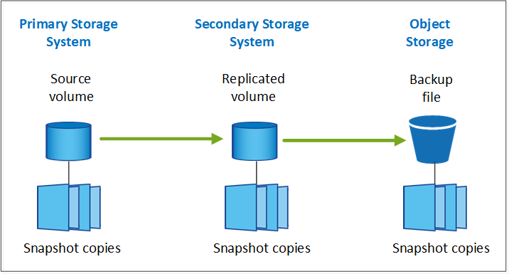
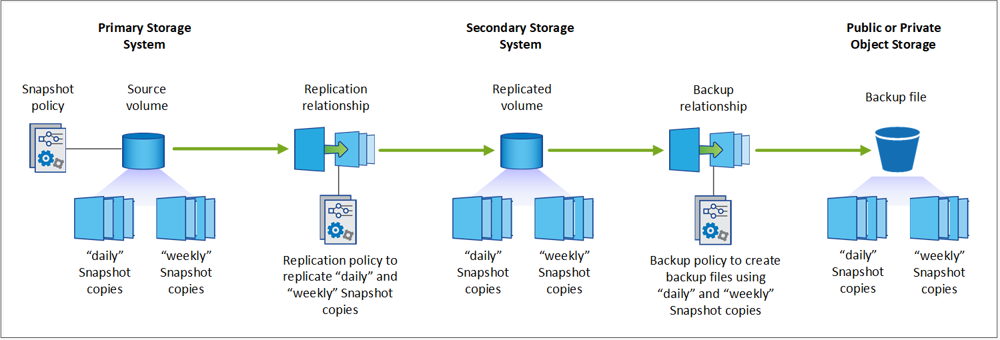

リリースノート
リリースノート
保護対策を計画しましょう
 変更を提案
変更を提案
BlueXPのバックアップとリカバリサービスでは、ソースボリュームのコピーを最大3つ作成してデータを保護できます。ボリュームでこのサービスを有効にするときに選択できるオプションは多数あるため、準備ができるように選択内容を確認する必要があります。
次のオプションについて説明します。
-
使用する保護機能（Snapshotコピー、レプリケートされたボリューム、クラウドへのバックアップ
-
使用するバックアップアーキテクチャ（ボリュームのカスケードバックアップまたはファンアウトバックアップ
-
デフォルトのバックアップポリシーを使用するか、カスタムポリシーを作成する必要があるか
-
開始前にサービスでクラウドバケットを作成するか、オブジェクトストレージコンテナを作成するか
-
使用しているBlueXP Connector導入モード（標準モード、制限モード、プライベートモード）
どの保護機能を使用しますか
使用する機能を選択する前に、各機能の機能と提供する保護の種類について簡単に説明します。
| バックアップタイプ | 説明 |
|---|---|
スナップショット |
ソースボリューム内のボリュームのポイントインタイムイメージをSnapshotコピーとして読み取り専用で作成します。Snapshotコピーを使用して、個 々 のファイルをリカバリしたり、ボリュームの内容全体をリストアしたりできます。 |
レプリケーション |
データのセカンダリコピーを別のONTAPストレージシステムに作成し、セカンダリデータを継続的に更新します。データは最新の状態に維持され、必要なときにいつでも利用できます。 |
クラウドバックアップ |
保護や長期アーカイブの目的で、データのバックアップをクラウドに作成します。必要に応じて、ボリューム、フォルダ、または個 々 のファイルをバックアップから同じ作業環境または異なる作業環境にリストアできます。 |
スナップショットはすべてのバックアップ方法の基礎であり、バックアップおよびリカバリサービスを使用するために必要です。Snapshot コピーは、ボリュームの読み取り専用のポイントインタイムイメージです。イメージには Snapshot コピーが最後に作成されたあとに発生したファイルへの変更だけが記録されるため、ストレージスペースは最小限しか消費せず、パフォーマンスのオーバーヘッドもわずかです。次の図に示すように、ボリューム上に作成されたSnapshotコピーを使用して、レプリケートされたボリュームとバックアップファイルがソースボリュームに加えられた変更と同期されます。

レプリケートされたボリュームを別のONTAPストレージシステムに作成し、バックアップファイルをクラウドに作成することもできます。または、レプリケートされたボリュームまたはバックアップファイルを作成するだけで選択できます。
要約すると、ONTAP作業環境内のボリュームに対して作成できる有効な保護フローは次のとおりです。
-
ソースボリューム→ Snapshotコピー→レプリケートされたボリューム→バックアップファイル
-
ソースボリューム→ Snapshotコピー→バックアップファイル
-
ソースボリューム→ Snapshotコピー→レプリケートされたボリューム

|
レプリケートされたボリュームまたはバックアップファイルの初回作成時には、ソースデータのフルコピーが含まれます。これは_ベースライン転送_と呼ばれます。以降の転送では、ソースデータの差分コピー（Snapshot）のみが含まれます。 |
さまざまなバックアップ方法の比較
次の表に、3つのバックアップ方法の一般的な比較を示します。オブジェクトストレージスペースは通常、オンプレミスのディスクストレージよりも安価ですが、クラウドからデータを頻繁にリストアする可能性がある場合は、クラウドプロバイダからの出力料金によって、削減量の一部を削減できます。クラウドのバックアップファイルからデータをリストアする頻度を特定する必要があります。
クラウドストレージでは、この条件に加えて、DataLockおよびRansomware Protection機能を使用する場合は追加のセキュリティオプションが提供されます。また、古いバックアップファイル用のアーカイブストレージクラスを選択することで、さらにコストを削減できます。 "DataLockとランサムウェアによる保護の詳細をご確認ください" および "アーカイブストレージの設定"。
| バックアップタイプ | バックアップ速度 | バックアップコスト | リストア速度 | リストアコスト |
|---|---|---|---|---|
スナップショット |
高 |
低（ディスクスペース） |
高 |
低 |
レプリケーション |
中 |
中（ディスクスペース） |
中 |
中（ネットワーク） |
クラウドバックアップ |
低 |
低（オブジェクトスペース） |
低 |
高額（プロバイダ料金） |
使用するバックアップアーキテクチャ
レプリケートされたボリュームとバックアップファイルの両方を作成する場合は、ファンアウトアーキテクチャまたはカスケードアーキテクチャを選択してボリュームをバックアップできます。
ファンアウト*アーキテクチャは、Snapshotコピーをデスティネーションストレージシステムとクラウド内のバックアップオブジェクトの両方に個別に転送します。

カスケード*アーキテクチャでは、Snapshotコピーが最初にデスティネーションストレージシステムに転送され、次にそのコピーがクラウド内のバックアップオブジェクトに転送されます。

さまざまなアーキテクチャの選択肢の比較
次の表は、ファンアウトアーキテクチャとカスケードアーキテクチャの比較を示しています。
| ファンアウト | カスケード |
|---|---|
Snapshotコピーが2つの異なるシステムに送信されるため、ソースシステムのパフォーマンスへの影響が小さい |
Snapshotコピーは1回だけ送信されるため、ソースストレージシステムのパフォーマンスへの影響が少なくなります |
ポリシー、ネットワーク、ONTAPの設定はすべてソースシステムで実行されるため、セットアップが簡単です |
ネットワークとONTAPの設定も、セカンダリシステムから行う必要があります。 |
Snapshotコピー、レプリケーション、およびバックアップにデフォルトのバックアップポリシーを使用するか
NetAppのデフォルトポリシーを使用してバックアップを作成することも、カスタムポリシーを作成することもできます。アクティブ化ウィザードを使用してボリュームのバックアップとリカバリサービスを有効にする場合は、デフォルトのポリシーと、作業環境にすでに存在するその他のポリシー（Cloud Volumes ONTAPシステムまたはオンプレミスのONTAPシステム）を選択できます。既存のポリシーとは異なるポリシーを使用する場合は、アクティブ化ウィザードの開始前または使用中にポリシーを作成できます。
-
デフォルトのSnapshotポリシーは、hourly、daily、およびweeklyのSnapshotコピーを作成し、hourlyのSnapshotコピーを6個、dailyを2個、weeklyを2個保持します。
-
デフォルトのレプリケーションポリシーでは、日単位Snapshotコピーと週単位Snapshotコピーがレプリケートされ、日単位Snapshotコピーは7個、週単位Snapshotコピーは52個保持されます。
-
デフォルトのバックアップポリシーでは、日単位Snapshotコピーと週単位Snapshotコピーがレプリケートされ、日単位Snapshotコピーは7個、週単位Snapshotコピーは52個保持されます。
レプリケーションまたはバックアップのカスタムポリシーを作成する場合は、ポリシーラベル（「daily」や「weekly」など）がSnapshotポリシーのラベルと一致している必要があります。一致していないと、レプリケートされたボリュームとバックアップファイルは作成されません。
カスタムポリシーは、BlueXPのバックアップリカバリ、System Manager、またはONTAPコマンドラインインターフェイス（CLI）を使用して作成できます。
"System Managerを使用してSnapshotポリシーを作成する"
"ONTAP CLIを使用したSnapshotポリシーの作成"
"System Managerを使用してレプリケーションポリシーを作成します"
"ONTAP CLIを使用してレプリケーションポリシーを作成します"
"System Managerを使用してバックアップポリシーを作成"
"ONTAP CLIを使用してバックアップポリシーを作成します"
注： System Managerを使用している場合は、レプリケーションポリシーのポリシータイプとして* Asynchronous を選択し、オブジェクトポリシーにバックアップする場合は Asynchronous と Back up to cloud *を選択します。
BlueXPのバックアップとリカバリのUIで、Snapshot、レプリケーション、オブジェクトストレージへのバックアップポリシーを作成できます。の項を参照してください "新しいバックアップポリシーを追加しています" を参照してください。
ここでは、カスタムポリシーを作成する場合に役立つONTAP CLIコマンドの例をいくつか示します。として_admin_vserver（Storage VM）を使用する必要があります <vserver_name> を参照してください。
| Policy概要の略 | コマンドを実行します |
|---|---|
単純なSnapshotポリシー |
|
クラウドへのシンプルなバックアップ |
|
DataLockとランサムウェア対策でクラウドにバックアップ |
|
アーカイブストレージクラスを使用したクラウドへのバックアップ |
|
別のストレージシステムへのシンプルなレプリケーション |
|
|
|
クラウドへのバックアップ関係に使用できるのはバックアップポリシーのみです。 |
ポリシーはどこに配置されていますか？
バックアップポリシーは、使用するバックアップアーキテクチャ（ファンアウトまたはカスケード）に応じてさまざまな場所に配置されます。レプリケーションポリシーとバックアップポリシーは同じようには設計されていません。2つのONTAPストレージシステムとオブジェクトへのバックアップでは、ストレージプロバイダがデスティネーションとして使用されるためです。
Snapshotポリシーは常にプライマリストレージシステムに存在します。
レプリケーションポリシーは常にセカンダリストレージシステムに存在します。
オブジェクトへのバックアップポリシーは、ソースボリュームが配置されているシステム上に作成されます。ファンアウト構成の場合はプライマリクラスタ、カスケード構成の場合はセカンダリクラスタになります。
これらの違いを表に示します。
| アーキテクチャ | スナップショットポリシー | レプリケーションポリシー | バックアップポリシー |
|---|---|---|---|
ファンアウト |
プライマリ |
セカンダリ |
プライマリ |
カスケード |
プライマリ |
セカンダリ |
セカンダリ |
そのため、カスケードアーキテクチャを使用するときにカスタムポリシーを作成する場合は、レプリケートされたボリュームが作成されるセカンダリシステムにレプリケーションポリシーとオブジェクトへのバックアップポリシーを作成する必要があります。ファンアウトアーキテクチャを使用するときにカスタムポリシーを作成する場合は、複製されたボリュームが作成されるセカンダリシステムでレプリケーションポリシーを作成し、プライマリシステムでオブジェクトポリシーにバックアップする必要があります。
すべてのONTAPシステムに存在するデフォルトのポリシーを使用している場合は、すべて設定されています。
独自のオブジェクトストレージコンテナを作成しますか
作業環境のオブジェクトストレージにバックアップファイルを作成すると、デフォルトでは、バックアップおよびリカバリサービスによって、設定したオブジェクトストレージアカウントにバックアップファイル用のコンテナ（バケットまたはストレージアカウント）が作成されます。AWSバケットまたはGCPバケットのデフォルトの名前は「netapp-backup-gp <uuid>」です。Azure BLOBストレージアカウントの名前は「netappbackup <uuid>」です。
特定のプレフィックスを使用したり、特別なプロパティを割り当てたりする場合は、オブジェクトプロバイダアカウントでコンテナを自分で作成できます。独自のコンテナを作成する場合は、アクティブ化ウィザードを開始する前にコンテナを作成する必要があります。コンテナは、ONTAPボリュームのバックアップファイルの格納専用に使用する必要があります。それ以外の目的に使用することはできません。バックアップアクティベーションウィザードは、選択したアカウントとクレデンシャル用にプロビジョニングされたコンテナを自動的に検出し、使用するコンテナを選択できるようにします。
バケットはBlueXPまたはクラウドプロバイダから作成できます。
*注：*現時点では、StorageGRIDシステムまたはONTAP S3へのバックアップを作成するときに、独自のS3バケットを使用することはできません。
「netapp-backup-xxxxxx」以外のバケットプレフィックスを使用する場合は、コネクタIAMロールのS3権限を変更する必要があります。詳細については、AWS S3へのバックアップの作成に関するトピックを参照してください。
バケットの詳細設定
古いバックアップファイルをアーカイブストレージに移動する場合、またはDataLockおよびRansomware Protectionを有効にしてバックアップファイルをロックし、ランサムウェアの可能性がないかスキャンする場合は、特定の構成設定でコンテナを作成する必要があります。
-
現時点では、クラスタでONTAP 9.10.1以降のソフトウェアを使用している場合、独自のバケット上のアーカイブストレージはAWS S3ストレージでサポートされています。デフォルトでは、バックアップはS3_Standard_storageクラスで開始されます。適切なライフサイクルルールを使用してバケットを作成します。
-
バケットのスコープ全体のオブジェクトを30日後にS3_Standard-IA_に移動します。
-
「smc_push_to_archive：true」タグのオブジェクトを_Glacier Flexible Retrieval_（旧S3 Glacier）に移動します。
-
-
DataLockとランサムウェア対策は、クラスタでONTAP 9.11.1以降のソフトウェアを使用している場合はAWSストレージ、ONTAP 9.12.1以降のソフトウェアを使用している場合はAzureストレージでサポートされます。
-
AWSの場合、30日間の保持期間を使用してバケットのオブジェクトロックを有効にする必要があります。
-
Azureの場合は、バージョンレベルの変更不可をサポートするストレージクラスを作成する必要があります。
-
どのBlueXP Connector導入モードを使用していますか
すでにBlueXPを使用してストレージを管理している場合は、BlueXP Connectorがインストールされています。BlueXPのバックアップとリカバリで同じコネクタを使用する予定なら、準備は万端です。別のコネクタを使用する必要がある場合は、バックアップとリカバリの実装を開始する前に、コネクタをインストールする必要があります。
BlueXPには複数の導入モードが用意されており、ビジネスやセキュリティの要件に合わせてBlueXPを使用できます。_Standard modeはBlueXP SaaSレイヤを活用してすべての機能を提供しますが、_restricted mode_and_private modeは接続が制限されている組織で使用できます。
完全なインターネット接続を備えたサイトのサポート
インターネットに完全に接続されたサイト（「標準モード」または「SaaSモード」とも呼ばれます）でBlueXPのバックアップとリカバリを使用する場合は、BlueXPで管理しているオンプレミスのONTAPシステムまたはCloud Volumes ONTAPシステムにレプリケートされたボリュームを作成できます。 また、サポートされている任意のクラウドプロバイダのオブジェクトストレージにバックアップファイルを作成できます。 "サポートされているバックアップ先の完全なリストを参照してください"。
有効なコネクタの場所のリストについては、バックアップファイルを作成するクラウドプロバイダのバックアップトピックを参照してください。コネクタをLinuxマシンに手動でインストールするか、特定のクラウドプロバイダに導入する必要がある場合は、いくつかの制限事項があります。
インターネット接続が制限されているサイトのサポート
BlueXPのバックアップとリカバリは、インターネット接続が制限されているサイト（「制限モード」とも呼ばれます）でボリュームデータをバックアップするために使用できます。この場合は、制限されたリージョンにBlueXP Connectorを導入する必要があります。
-
AWSの商用リージョンにインストールされているCloud Volumes ONTAP システムからAmazon S3にデータをバックアップできます。方法を参照してください "Cloud Volumes ONTAP データを Amazon S3 にバックアップします"。
-
Azureの商用リージョンにインストールされているCloud Volumes ONTAP システムからAzure Blobにデータをバックアップできます。方法を参照してください "Cloud Volumes ONTAP データを Azure Blob にバックアップ"。
インターネットに接続されていないサイトをサポート
インターネットに接続されていないサイト（「プライベートモード」または「ダーク」サイトとも呼ばれます）では、BlueXPのバックアップとリカバリを使用してボリュームデータをバックアップできます。この場合は、同じサイトのLinuxホストにBlueXP Connectorを導入する必要があります。
-
ローカルのオンプレミスONTAP システムからローカルのStorageGRID システムにデータをバックアップできます。方法を参照してください "オンプレミスの ONTAP データを StorageGRID にバックアップ" を参照してください。
-
ローカルのオンプレミスONTAPシステムから、ローカルのオンプレミスONTAPシステムまたはS3オブジェクトストレージ用に構成されたCloud Volumes ONTAPシステムにデータをバックアップできます。方法を参照してください "オンプレミスのONTAPデータをONTAP S3にバックアップ" を参照してください。
ifdef：aws []